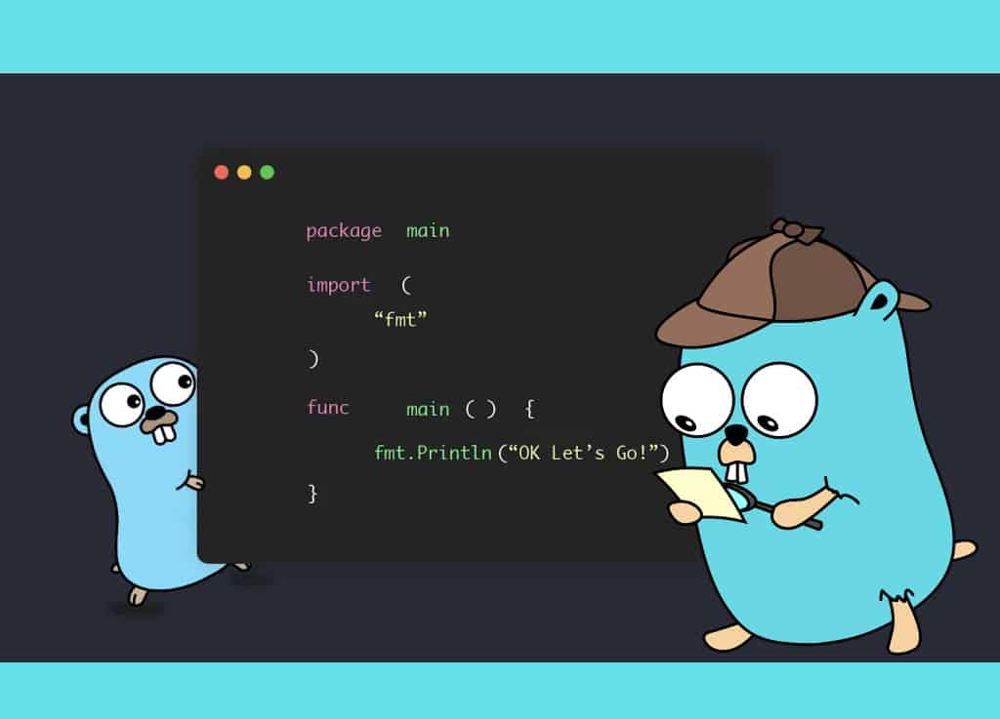

PARADIGMAS DA PROGRAMAÇÃO
O GoLang foi criado por um grupo de engenheiros da Google no ano de 2007, o projeto foi iniciado por Robert Griesemer, Rob Pike e Ken Thompson com o objetivo de criar uma nova linguagem que fosse fácil de usar, facilitasse a vida de quem programa em múltiplas plataformas e que continuasse cobrindo os novos projetos da Google.
No momento da criação da linguagem a empresa estava insatisfeita com as varias linguagens de programação que estavam sendo usada ao mesmo tempo, e isso porque a empresa considerava ser complicado e também um tanto quanto confuso ter que juntar os projetos em linguagens diferentes. Então pensando em como solucionar este problema, além de eliminar a lentidão e melhorar os processos internos de desenvolvimento dos projetos de software da Google, Rob Pike pensou na possibilidade de se ter uma linguagem de programação própria, o que mais tarde se tornou a GoLang.

A estrutura utilizada na linguagem GoLang resolveu perfeitamente os problemas da Google, e ela é conhecida pela comunidade de desenvolvedores como uma linguagem simples e de fácil entendimento. O Golang é distribuído sob licença estilo BSD e grande parte do desenvolvimento da linguagem se dá por ela ser totalmente open source, ou seja, sistema de código aberto onde a própria comunidade pode contribuir para o melhoramento da linguagem. O que é uma grande vantagem para o Google, criador da linguagem bem como para as empresas que a utilizam. O Golang foi pensando nas linguagens básicas e mais antigas como C e Pascal, elas serviram de inspiração porque as pessoas apreciam segurança e performance. Desde o seu lançamento, o Golang teve muitas alterações principalmente em sua sintaxe e semântica. Foi removida algumas coisas da linguagem C, fazendo com que a sua estrutura se tornasse ainda mais simples para uso. Em consequência dessas ações a Golang se tornou mais amigável para desenvolvedores de software, uma das atualizações mais importantes foi a 1.5, lançada em 2015, que incluiu a alteração do seu compilador o que antes escrito em C. Com isso, permitiu a inclusão de frameworks, bibliotecas e outras ferramentas. Desta forma, a linguagem esta ganhando visibilidade, atraindo mais profissionais a aprender e contribuir com a melhoria da mesma.
Atualmente, a linguagem GoLang se encontra na versão 1.18, lançada em março de 2022, essa atualização trouxe melhorias no seu tempo de execução, novas bibliotecas, implementações de Toolchains, além de outras pequenas melhorias de performance. O seu crescimento fica claro conforme mais empresas estão aderindo ao seu uso. Esta linguagem está sendo adotada por muitas empresas como a Dinamize devido a suas vantagens, quando comparada com serviços usados anteriormente. A alta eficiência da linguagem permite que os serviços desenvolvidos processem volumes maiores de informação. É muito discrepante a melhora que ocorre nos processos como o envio de e-mails, importações de dados e os serviços de API, além de como a linguagem consegue aproveitar o máximo de recursos como CPU, memória, armazenamento e tráfego de rede, atividades que antes precisavam ser feitas um após a outro, passaram a ser feitas simultaneamente. Isso gerou ganhos na performance e melhorias na forma de pensar os processos. Com essas melhorias foi possível criar novos recurso para o planejamento de novas estratégias de automação de marketing de forma mais ágil e efetiva. Devido a linguagem ser código aberto, dá a empresa maior liberdade para desenvolver seus projetos. O resultado disso são serviços que resolvem problemas de uma forma mais integrada à realidade dos nossos clientes. A Dinamize não é a única empresa que percebeu as vantagens proporcionadas pela utilização de uma linguagem mais moderna, entre as empresas que também utilizam o Go, podemos destacar: Uber, Dropbox, Imgur, Netflix e SpaceX.